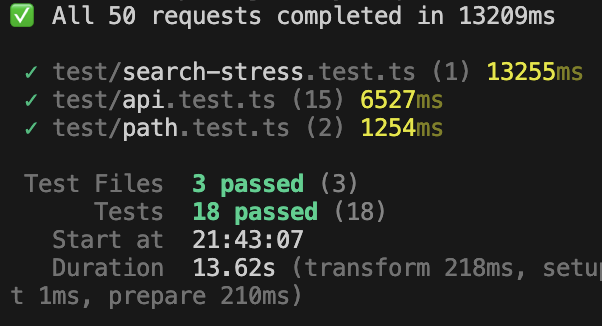

mbus-backend
Maizebus Backend
Backend service for the Magic Bus application. Handles real-time bus tracking, route management, and multi-modal journey planning (bus + walking) using the McRaptor algorithm.
Setup
First, obtain an API key for the Magic Bus backend from the official Magic Bus Website.
Then, define the MBUS_API_KEY environment variable with your API key.
To install dependencies, run npm i
Running the Backend
To run the backend, run npm start.
By default, the service runs on port 3000. To define a port for the service to run on, define an environment variable called PORT before running the backend.
Documentation
This project uses TSDoc for code documentation. To compile the static documentation:
npm run docs
The documentation is served at http://localhost:3000/docs or this link.
Tests
This project uses Vitest for fast unit and integration testing.
- Run all tests:
npm test - Run stress tests:
npm run stress-test
An example of passing the tests is below.

Contributing
Before submitting a pull request to main, please make sure you pass all the tests and can compile docs. If you believe some of the tests faulty or no longer needed after your commit, please contact Andrew Yu or Ryan Lu on Slack.